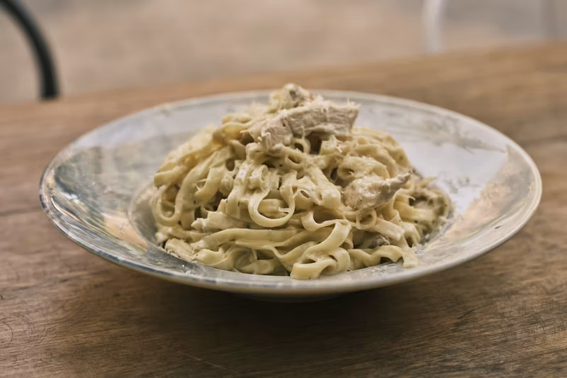

Odin Recipes
Fettuccine Alfredo

Description
The perfect homemade fettuccine alfredo using heavy cream, butter, parmesan cheese, and a touch of garlic.
Ingredients
- 1lb Fettuccine Pasta
- 6 Tablespoons Butter
- 1 Garlic Clove (Minced)
- 1 1/2 Cups Heavy Cream
- 1/4 Teaspoon Salt
- 1 1/4 Cup Shredded Parmesan Cheese
- 1/4 Teaspoon Pepper
- 2 Tablespoons Italian Parsley (optional)
Steps
1 | In a large pot, heat water over high heat until boiling. Add salt to season the water. Once it is
boiling, add
fettuccine and cook according to package instructions.
2 | In a large skillet or pan, heat butter over medium heat. Add minced garlic and cook for 1 to 2 minutes.
Stir in
heavy cream.
3 | Let heavy cream reduce and cook for 5 to 8 minutes. Add half of the parmesan cheese to the mixture and
whisk well until smooth. Keep over heat and whisk well until cheese is melted.
4 | Save some pasta water. The pasta water is full of flavor and can be used to thin out the sauce.
5 | Toss alfredo sauce with fettuccine pasta and add half of the parmesan cheese. Once it is tossed, garnish
with the remaining parmesan cheese. Add a little pasta water if it needs to be thinned out.
6 | Garnish with Italian parsley, if so desired.
Home